09:00–09:15
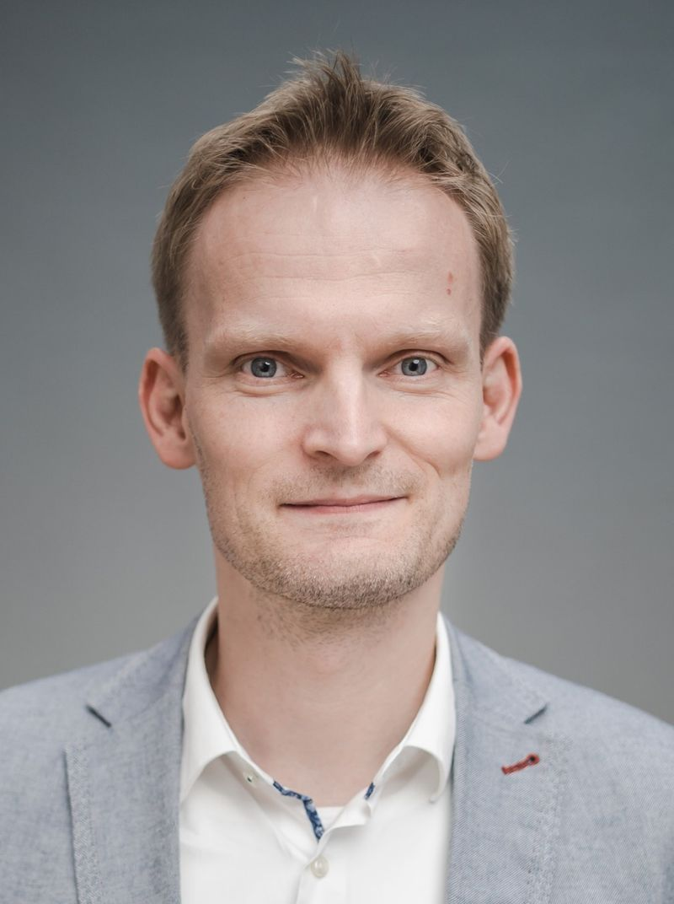
Opening
Robert Wille

Robert Wille
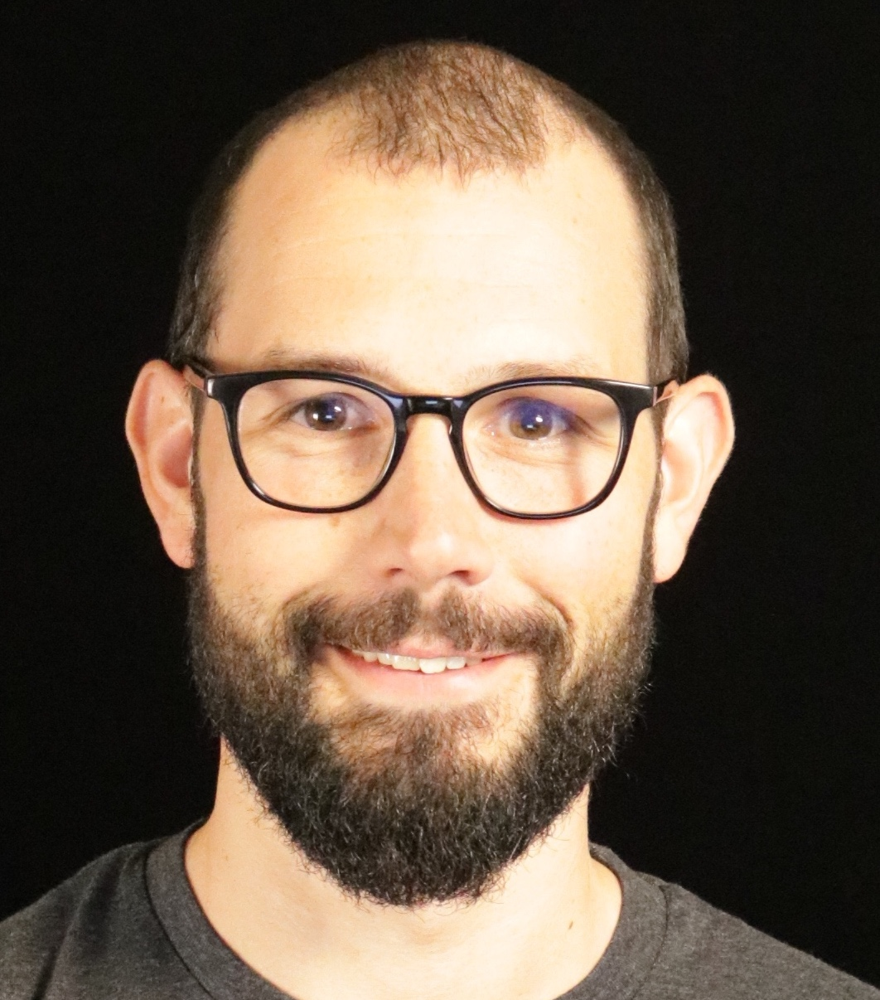
AWS
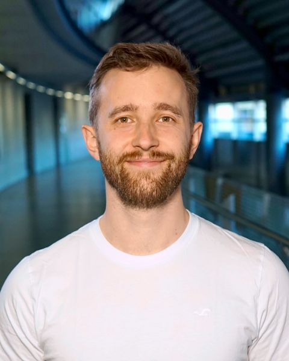
MQSC & TUM
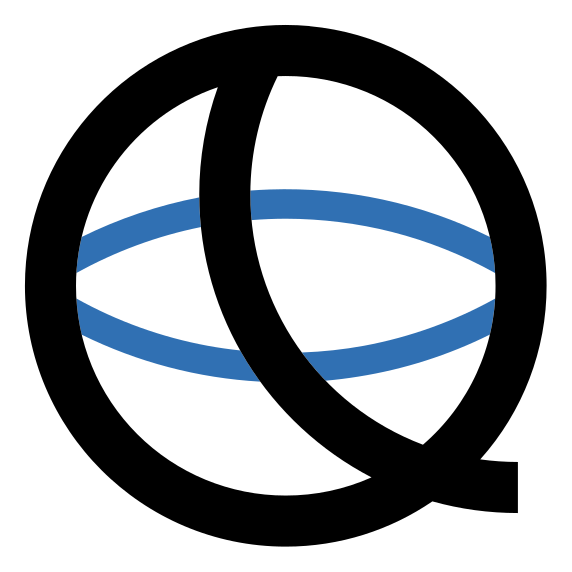
Hide presentations
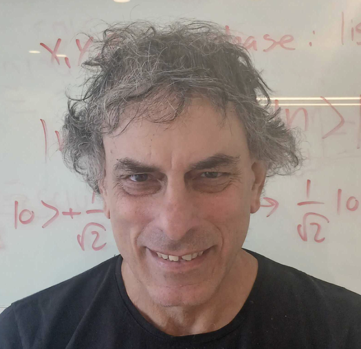
Classiq
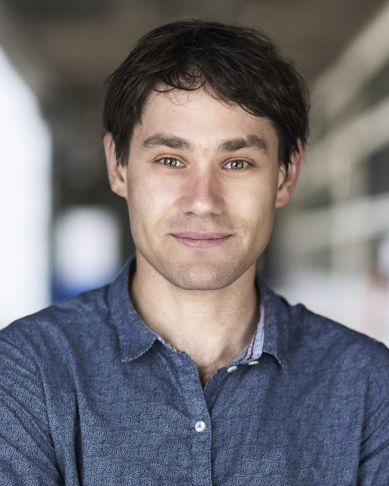
Alice & Bob
Hide presentations
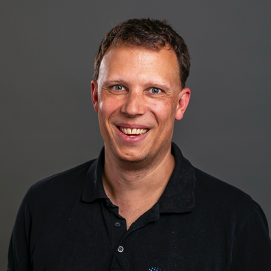
Everything Works at Eight Qubits: Building Quantum Algorithms That Scale
Quantum algorithms that work convincingly at small scale routinely fail at the scale where the underlying problems become interesting — often because the bottleneck limiting an algorithm at small sizes is not the one that limits it at relevant sizes.
This raises the central question the talk addresses: how to build algorithms that scale for a machine that does not yet exist and cannot be benchmarked against. planqc’s approach uses tensor networks to study problems at realistic sizes and with realistic structure entirely on classical computers, revealing where a method breaks down before we commit to it — I will show results from industrial optimisation problems. The second half of the problem is the algorithms themselves: I will present our work on making variational methods trainable at scale, which is what turns a classical insight into something a quantum computer can execute.
Martin Kiffner is Head of Quantum Solutions and Hardware Modelling at planqc, where he leads around 30 researchers working out where neutral-atom quantum computers will be genuinely useful. A theoretical physicist by training, he spent over a decade in research at Oxford and at the Centre for Quantum Technologies in Singapore and was among the first to apply tensor networks to fluid dynamics. His main interest lies at the boundary between classical and quantum methods.
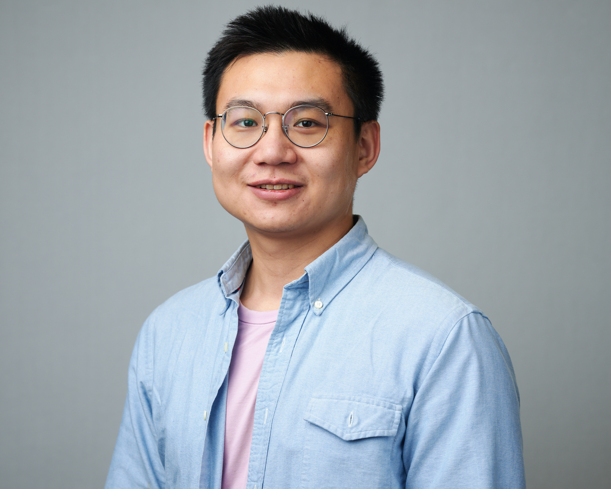
QuEra
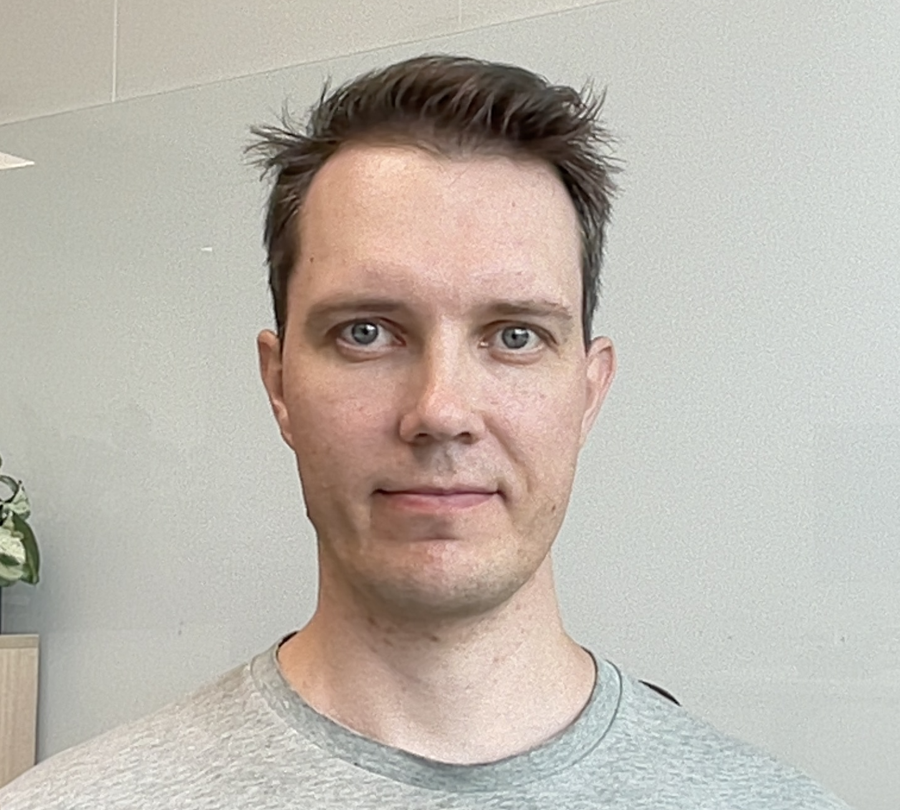
From NISQ to Fault Tolerance: An Open Architecture for Quantum Innovation
Quantum computers have transitioned from laboratory prototypes to production systems, and software serves as the critical bridge between hardware capabilities and end-user value. This talk traces IQM software path from present-day operational reality toward long-term, fault-tolerant quantum computing. We will explore our open approach for software stack, what it means today and in the future and how it helps move QEC research even more into experimental work on superconducting quantum computers.
Janne Mäntylä is Head of Software Development at IQM Quantum Computers, a global leader in quantum computers sold and delivered to customers. He leads the organization building software that on one side controls the electronics instruments and on the other side provides programming frameworks for users and researchers. Before leading the department, Janne worked as a Lead Software Engineer, building hands-on the software that controls the company's quantum computers.
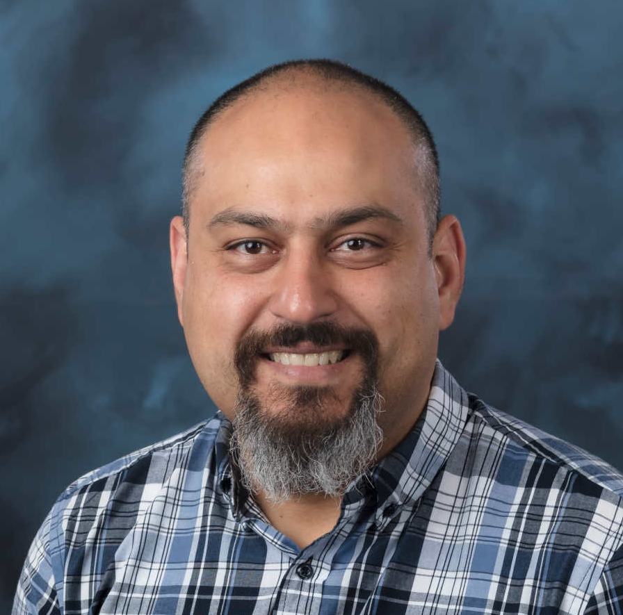
ORNL
Robert Wille
IBM
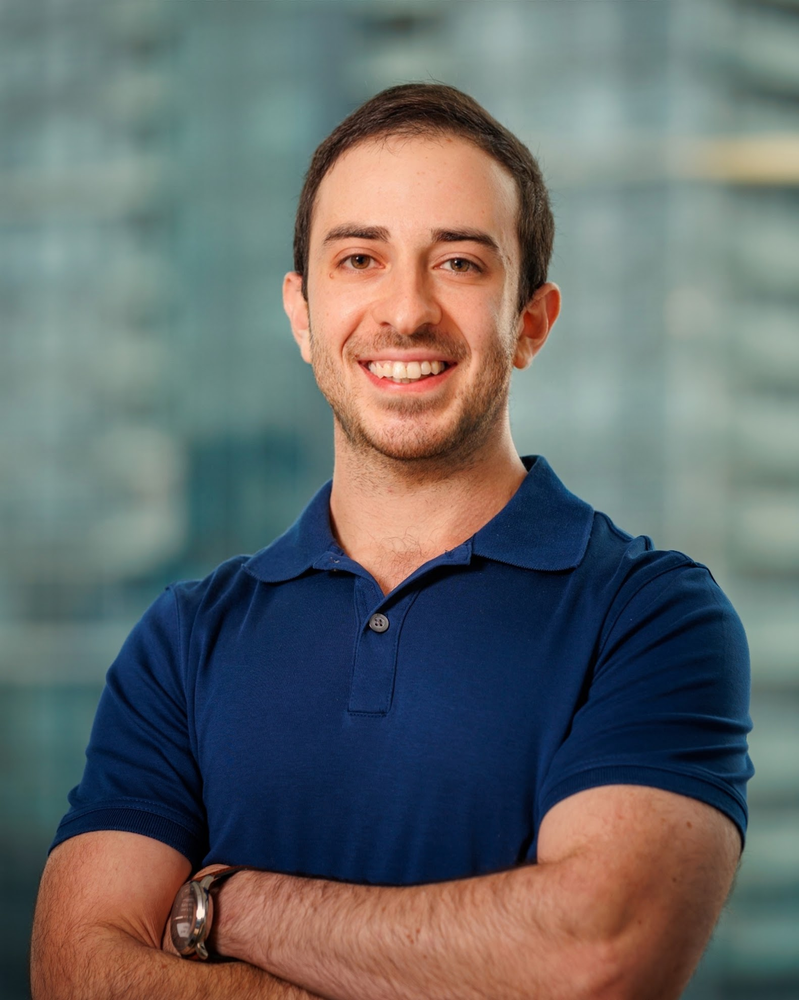
Xanadu
Hide presentations
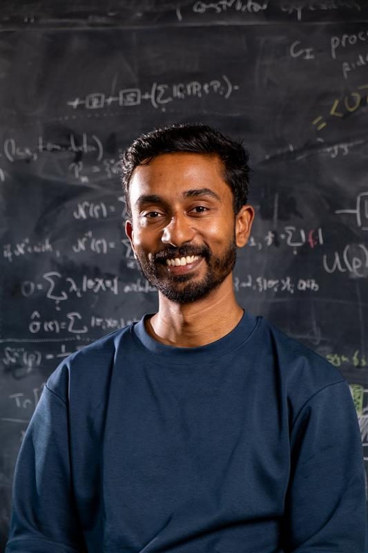
Quantinuum
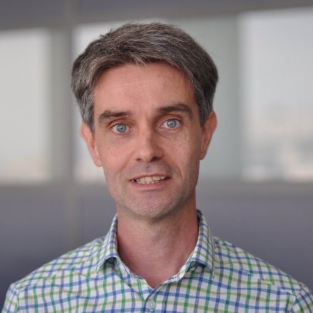
Quandela
Hide presentations
HPE
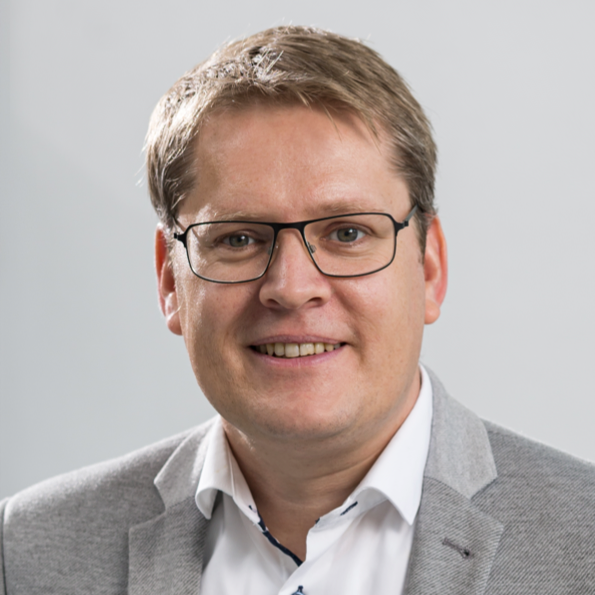
FZ Jülich
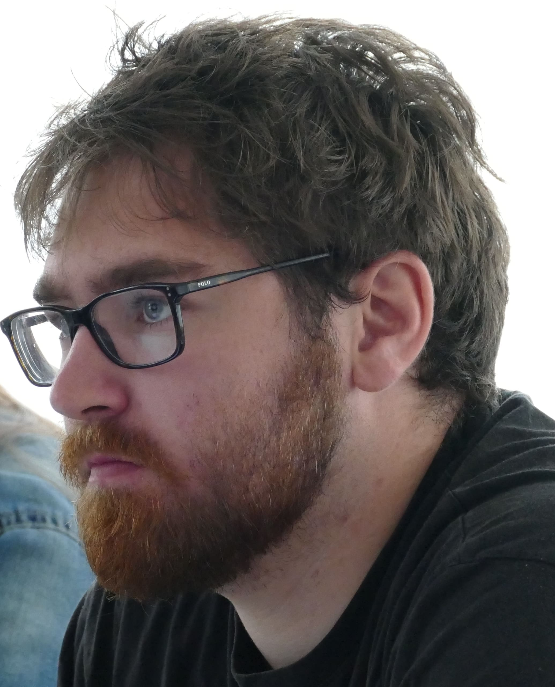
Pasqal
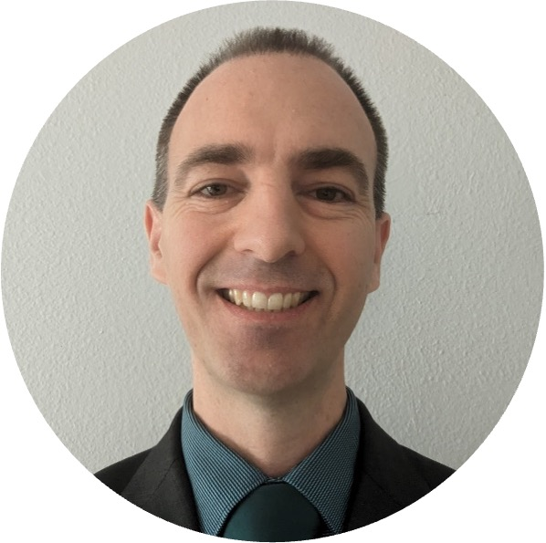
tqec: Compiling to state-of-the-art lattice surgery
Lattice surgery is a complex and rapidly evolving field, and the tqec community, now over 1200 people from around the world, exists to both enable people to learn this field and provide an open source tool to study and advance it. In this talk I will review how both the literature and the tqec tool have advanced over the last 12 months, and the exciting road ahead.
Dr. Austin Fowler is an independent researcher with a passion for open access learning and collaborative work. The tqec project, his sole focus these days, was born at the MQSF in 2023. He has been involved in topological quantum error correction since 2008, and has participated in numerous theoretical and experimental milestones on the path to realizing a practical large-scale quantum computer.
MQSF 2026